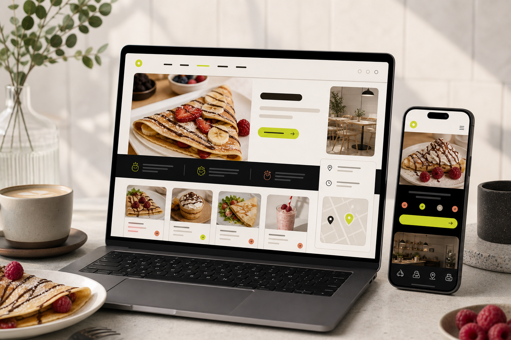

Design
Brand identity, website design, UI/UX, landing pages, and digital systems that make a business easier to trust.
Founder-led digital studio
Made to Scale builds websites, web apps, booking systems, brands, maintenance systems, and AI-powered tools for businesses ready to grow online.
Founder-led by Giorgos Tomaras, built around direct communication and careful execution.

 HospitalitySystems
HospitalitySystems
Food & drinkSelected work
Two projects are enough when they are shown with clarity: the goal, the decisions, the build, and the business value.
A clean local hospitality presence designed around atmosphere, trust, and easy browsing on every screen.
A playful cafe website with polished presentation, visual appetite, and a simple path to customer action.
Services
Brand identity, website design, UI/UX, landing pages, and digital systems that make a business easier to trust.
Static websites, web apps, booking systems, AI chatbots, AI integrations, and custom automations.
Maintenance, updates, performance improvements, security checks, content changes, and long-term growth work.
Founder-led
Made to Scale is led by Giorgos Tomaras, giving clients a direct path to the person shaping the strategy, design, build, and launch.
Explore chatbots, automated lead replies, content tools, internal automations, and custom features when they serve the project.
Ongoing care can cover updates, small fixes, improvements, performance checks, and future feature growth.
Every project is different. Scope, timeline, goals, and support needs shape the quote.
The site starts with a simple enquiry flow now and leaves room for a project planner later.
Process
The work should feel guided, not vague. Each step has a purpose, from understanding the business to supporting what comes next.
Understand the business, audience, existing site, and required outcomes.
Define structure, scope, content needs, design direction, and functionality.
Create a clean visual system focused on trust, clarity, and conversion.
Develop the website, web app, booking flow, or AI integration.
Test responsiveness, performance, SEO basics, forms, analytics, and deployment.
Offer maintenance, updates, improvements, and future feature growth.
Trust
FAQ
Clear answers help visitors understand pricing, timing, maintenance, AI, and the founder-led working model.
Every project is quoted individually based on scope, pages, features, timeline, and support needs.
No. We understand the project first, then provide a tailored quote that matches the work required.
Simple sites can move faster. Web apps, booking systems, and AI integrations need more planning and testing.
Yes. Ongoing support can include updates, fixes, content changes, performance improvements, and future features.
Yes. AI chatbots, automated lead replies, content tools, internal automations, and custom features can be explored.
AI check
A benchmark-inspired prompt section gives curious visitors another way to pressure-test the offer before they enquire.
Start a project
Tell us what you are building, where you want to go, and what would make the project a success.
Studio overview
Made to Scale is founder-led by Giorgos Tomaras and built for direct communication, careful execution, and practical support after launch.